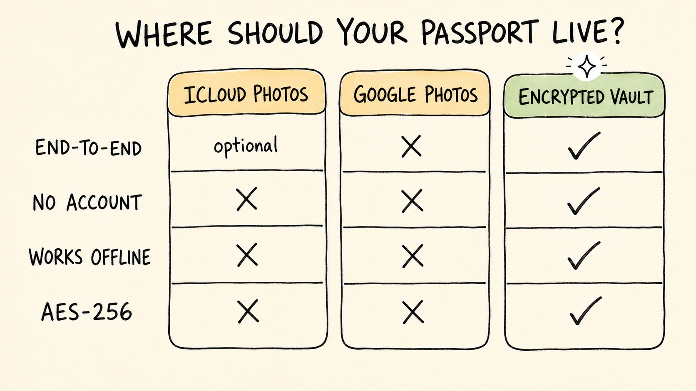

iCloud vs Google Photos vs Encrypted Vault: Safest Way to Store Your Passport
Travel Document Vault

Key Takeaways
- iCloud Photos (with Advanced Data Protection) offers end-to-end encryption but still links your passport copies to your Apple ID account.
- Google Photos is not end-to-end encrypted by default and indexes your content, making it less suitable for sensitive identity documents.
- Dedicated encrypted apps store passport data on-device with AES-256 encryption, require no account or cloud upload, and work offline. This is the most secure option.
- Each approach involves trade-offs between convenience and security that you should understand before choosing.
- The safest method depends on your personal risk tolerance and how you balance cross-device access against data isolation.
A passport is one of the most sensitive documents you own, containing your full name, date of birth, passport number, and biometric data. Losing access to it at a border is stressful, but losing control of a digital copy through a breach is a more serious concern that most people don't properly consider. Yet that's exactly why most people should think more carefully about where they store digital copies rather than simply choosing whatever feels most convenient.
The three most common approaches (iCloud Photos, Google Photos, and dedicated encrypted apps) each offer a different balance of convenience and security. This article explains what each does, how they differ in protecting your data, and which might be right for your situation.
Option 1: iCloud Photos
iCloud Photos automatically syncs your photos across your iPhone, iPad, and Mac, making passport copies accessible from any device.
How it works
Photos you take upload to iCloud and encrypt with a key derived from your Apple ID. If you enable Advanced Data Protection (Apple's optional end-to-end encryption layer), your photos are encrypted on Apple's servers using keys only you hold. Even Apple cannot decrypt them.
Security properties
- End-to-end encrypted with Advanced Data Protection: Yes, if you enable it. Without Advanced Data Protection, iCloud uses encryption in transit but Apple retains decryption keys.
- Requires account: Yes, your Apple ID.
- Cloud upload: Yes, automatic.
- Designed for identity documents: No. iCloud Photos is designed for personal photography, not sensitive documents.
Trade-offs
For convenience, iCloud Photos shines: your passport copy automatically syncs across all your Apple devices and persists if you lose your phone. Enabling Advanced Data Protection adds end-to-end encryption that even Apple cannot bypass, which significantly improves security compared to standard iCloud storage.
However, your passport copy becomes linked to your Apple ID account, creating a potential single point of failure that extends across all your iCloud data. If someone compromises your Apple ID through a weak password, credential reuse, or social engineering, they gain access to everything in your iCloud account, including your passport scans. You're also trusting Apple's operational security, which means any breach of their systems would expose your data on their servers, though Apple is generally considered a strong security steward.
Option 2: Google Photos
Google Photos is Google's equivalent service, offering automatic backup and organisation of photos across devices.
How it works
Photos upload to Google's servers and are encrypted in transit. Google processes the photos for features like Search, Lens, and recommendations, which requires analysing image content.
Security properties
- End-to-end encrypted by default: No. Google Photos uses encryption in transit but not end-to-end. Google can decrypt and view your photos.
- Content scanning: Google indexes and analyses photo content for features and recommendations.
- Requires account: Yes, your Google account.
- Cloud upload: Yes, automatic.
- Designed for identity documents: No.
Trade-offs
Google Photos offers deep integration with Android, free storage options, and powerful search capabilities, which is appealing for convenience. But the security disadvantages for sensitive documents are more significant: Google Photos does not use end-to-end encryption by default, meaning Google can technically access your photos, and your passport scans are processed by Google's content analysis systems. Google has also experienced security incidents in the past, and identity documents need especially careful protection, so Google Photos ends up a lower-security choice than alternatives when safeguarding sensitive data is your priority.
What this means in practice
If your Google account is compromised, someone with access can retrieve your passport scans from your photo library. Because Google indexes these photos for search, the images are processed by automated systems and stored in multiple locations across Google's infrastructure, increasing the surface area for exposure.
Option 3: Dedicated Encrypted Apps
A dedicated encrypted app designed for travel documents works entirely on your device and never uploads data to external servers.
How it works
When you add your passport scan to the app, it's encrypted using AES-256 and stored entirely on your phone. The app works fully offline - no account required, no server needed. If you want multi-device access, an optional Pro feature backs up an encrypted copy to your own iCloud or Google Drive, sealed with a recovery code only you hold.
Security properties
- On-device AES-256 encryption: Yes. Data never leaves your phone.
- Requires account: No. No account, no server, no login.
- Cloud upload: No. None.
- Works offline: Yes, fully.
- Designed for identity documents: Yes. The entire architecture is optimised for keeping sensitive documents private.
Trade-offs
The security advantages are substantial: your passport data is never transmitted or stored on a remote server, so it's never accessible to anyone else, and there's no remote server to compromise if someone gains unauthorised access to the app company's systems. This means you maintain complete control and ownership of your documents at all times.
The catch is reduced convenience: you can't automatically access your passport copy across multiple devices, and if you lose your phone, the app won't restore your documents on its own - you'd need to manually restore from a backup. For most families travelling together, storing documents on one parent's phone is sufficient anyway, and many apps support manual syncing via backup, which adds a layer of flexibility without requiring automatic cloud upload.
Travel Document Vault is built specifically for this, storing passports, visas, and ID documents for every family member on-device with AES-256 encryption. It requires no cloud upload, no account, and no subscription. It also tracks expiry dates and sends reminders months in advance, so you're not caught off guard at check-in. Get it on iOS and Android.
Direct Comparison Table
| Feature | iCloud Photos | Google Photos | Encrypted App |
|---|---|---|---|
| Encryption at rest | Yes (AES-128) | Yes (AES-128) | Yes (AES-256) |
| End-to-end encrypted | Optional (Advanced Data Protection) | No | Yes (always) |
| Account required | Yes (Apple ID) | Yes (Google account) | No |
| Works fully offline | No (needs sync) | No (needs sync) | Yes |
| Remote breach risk | Medium (Apple's servers) | Medium-High (Google's servers + content scanning) | None (no remote storage) |
| Cross-device access | Automatic | Automatic | Manual backup only |
| Cost | Free (200GB), then paid | Free (15GB), then paid | Typically a one-time purchase, no subscription |
| Designed for identity docs | No | No | Yes |

Which Should You Choose?
The answer depends on your personal risk tolerance and use case.
Choose iCloud Photos if: You're already deeply embedded in Apple's ecosystem, want automatic cross-device access, and accept that your Apple ID is a single point of failure. Enabling Advanced Data Protection adds end-to-end encryption that improves security significantly, and for most iPhone users, it remains the most convenient option.
Avoid Google Photos for passport storage. The lack of default end-to-end encryption combined with content scanning makes it less suitable for sensitive identity documents than alternatives. If you use Google Photos, consider keeping a backup elsewhere.
Choose a dedicated encrypted app if: Security is your primary concern, you want to reduce the number of third parties holding your data, and you are comfortable with manual backup and less convenient cross-device access. This approach offers stronger isolation and is specifically designed for travel documents. For families, apps that support multiple family members under one app (with no cloud upload) offer good balance.
A Balanced Approach
Many people use a hybrid approach: keeping a copy in iCloud or Google Photos for everyday access across devices, and a second copy in a dedicated encrypted app as a secure backup. This provides both convenience and redundancy. The key is understanding the trade-offs of each method and choosing consciously.
Whatever method you choose, remember that a digital copy of your passport is as sensitive as the physical document itself - protect it with the same care and attention.
Before you rely on this: it's a blog, not an official source. Rules and details change, and your situation may be different. We check what we publish, and we can still be wrong or out of date. If something here matters to your plans, confirm it with the authority that handles it before you act.
Frequently Asked Questions
Is iCloud Photos secure for storing passport copies?
iCloud Photos with Advanced Data Protection enables end-to-end encryption, which is more secure than standard iCloud storage. However, your passport scans are still encrypted and stored on Apple's servers, creating a shared breach surface with your Apple ID. If your Apple ID is compromised, an attacker gains access to everything in your iCloud account. For identity documents, this represents additional risk compared to keeping them only on your device.
Why is Google Photos not recommended for passport storage?
Google Photos is not end-to-end encrypted by default. Google indexes and scans the content of photos for features like search and organisation, meaning your passport images are processed by Google's systems. Historically, Google has also experienced security incidents. For sensitive identity documents, this combination of default lack of E2E encryption and content scanning makes Google Photos a lower-security choice than alternatives.
What are the advantages of a dedicated encrypted app for passport storage?
A dedicated encrypted app designed specifically for travel documents typically stores data on-device using AES-256 encryption, requires no account or cloud upload, works offline, and has a much smaller breach surface area. Because your passport data never leaves your phone, there is no remote server to breach. The trade-off is reduced convenience for cross-device access, but for security-first users, this is the most secure storage method available.
Can I use multiple storage methods for the same passport?
Yes. Many people keep a scanned copy in iCloud or Google Photos for everyday access across devices, and a second copy in a dedicated app or on-device storage as a secure backup. This approach provides both convenience and security redundancy. The key is understanding the trade-offs of each method and choosing consciously based on your personal risk tolerance.
Which storage method is best for a family with multiple travellers?
For families, a dedicated encrypted app that stores documents for multiple people under one account, without uploading to the cloud, typically offers the best balance of security and convenience. This lets one parent or guardian manage all family members' passport documents without requiring each person to have a separate app or cloud account, while keeping sensitive documents off external servers.